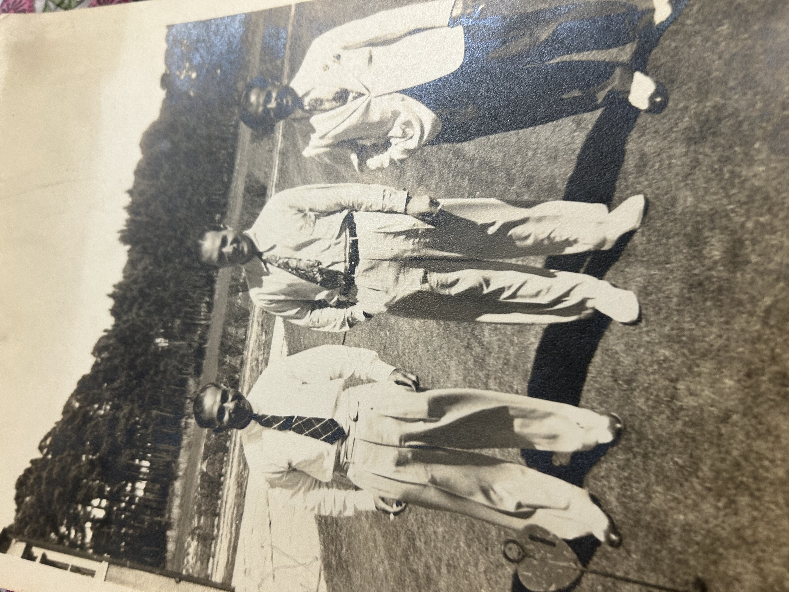
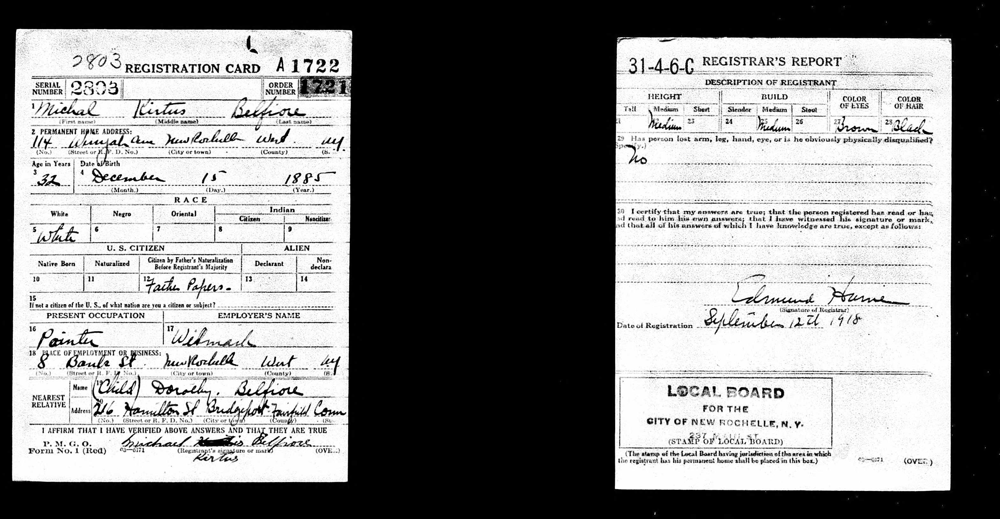
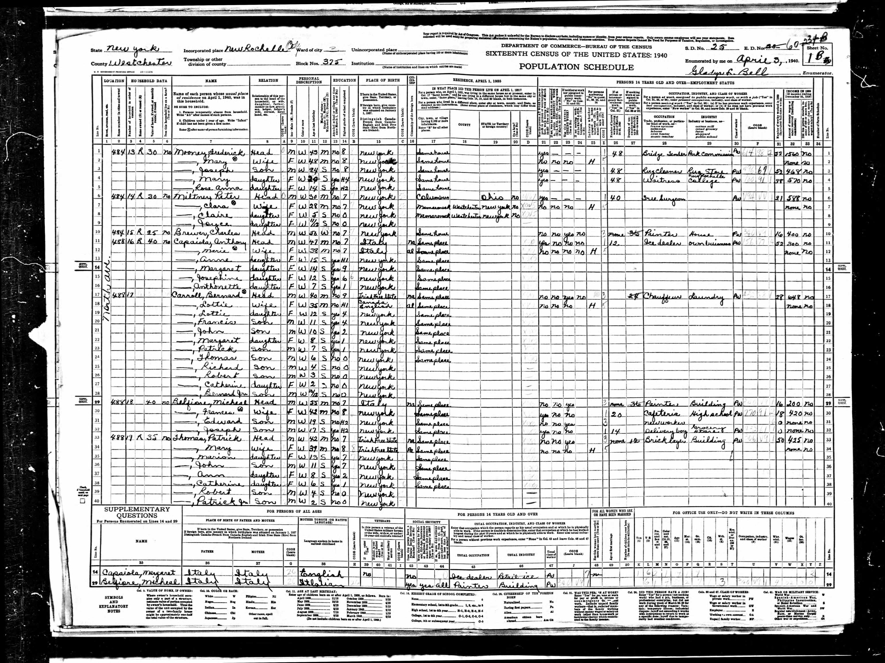

The Golfing Brothers
Sons of Immigrants, Pioneers of a Sport
Three of the four sons of Leonardantonio and Maria Belfiore — Italian immigrants from San Bartolomeo in Galdo — became professional golfers. This was extraordinary for the era.
Before the Belfiore brothers, professional golfers and club makers in America were almost exclusively foreign-born, usually Scottish. The country clubs that employed them were bastions of old-money privilege. Italian immigrants worked the kitchens, the laundry, the grounds. They didn't play the game, let alone teach it.
Sammy's obituary in The Standard-Star described him as "the first of the native born trio to blossom forth" — among the first native-born Americans to enter professional golf. Three boys from 46 Mechanic Street, sons of a painter and a woman from the Apennine mountains, broke into one of the most exclusive professions in American sport.
The fourth brother, Michael — Seb's great-grandfather — was described in the obituary as "their non-golfing brother." He stayed in New Rochelle, worked as a house painter, and raised a family. He was the oldest, the only one born in Italy, and the only one who didn't pick up a club.

The three golfing Belfiore brothers together on a golf course, circa 1940s. Believed to be Sammy, Frank, and Joseph.
The Three Brothers
Sammy Belfiore — "The First to Blossom Forth"
Sammy Belfiore was born December 25, 1899, in New Rochelle. He became assistant golf professional at Wykagyl Country Club in New Rochelle — a prestigious club that had been founded in 1898. After 36 years of playing golf, he became head professional at Seabreeze Golf and Tennis Club in Daytona Beach, Florida, in 1948. He held that position until his death.
Sammy changed the spelling of his surname from Belfiore to "Belfore" — possibly for easier Americanization, or to fit on golf scorecards. He died in Daytona Beach around 1971–1972, age 72, after a long illness. He was the last surviving golfing brother. He was survived by his son Sammy Jr. (Daytona Beach), daughter Patricia Fleming (Birmingham, Michigan), and three grandchildren.
His obituary in The Standard-Star is the single most important document in this entire research — it named every sibling, confirmed the complete family structure, and described the remarkable golfing story.
Frank Belfiore — The Golf Shop
Frank Belfiore (Francesco) followed his brother to Florida. According to Sammy's obituary, Frank "took over the golf shop at the club in Daytona Beach." The two brothers worked together in the Florida sun, running the golf operation at the same club. Frank died April 21, 1968, in Daytona Beach — three or four years before Sammy.
His parents are confirmed as Antonio Belfiore and Maria D. Circelli via Ancestry indexed records, providing independent verification of the family connection.
Joseph Belfiore — Grosse Pointe, Michigan
Joseph became golf professional at Grosse Pointe, Michigan — one of the wealthiest suburbs in America, home to the auto industry executives of Detroit. He served there "for many years." He died before Sammy's obituary, which lists him among the predeceased brothers.
Critical note: This Joseph (the golfer, Michael's brother) is NOT Seb's grandfather. Seb's grandfather Joseph was Michael's son — almost certainly named after this uncle following the classic Italian tradition of naming children after uncles and grandparents.
The Fourth Brother
Michael Kirtus Belfiore — Seb's great-grandfather — was described in Sammy's obituary as "their non-golfing brother." He was the oldest of the four, born December 15, 1883 or 1885, in Italy, and the only one who arrived as a child rather than being born in New Rochelle.
While his three younger brothers were playing golf at country clubs from New Rochelle to Daytona Beach to Grosse Pointe, Michael stayed in New Rochelle and worked as a house painter. He was married twice — his first wife (name unknown) gave him a daughter, Dorothy. He then married Frances Towey, an Irish-American woman, with whom he had two sons: Edward and Joseph (Seb's grandfather).
He died on January 16, 1952, at New Rochelle Hospital. His death certificate — the document that started this entire genealogical research — was preserved by his grandson William and passed down through the family.

Michael Kirtus Belfiore's WWI Draft Registration Card, 1918 — "their non-golfing brother." Lists his daughter Dorothy at 216 Hamilton Street, Bridgeport, CT.

1940 Census — Michael listed as "Painter, Building," living with Frances, Edward, and Joseph in New Rochelle.
The Photo
A family photograph shows three men standing on what appears to be a golf course or club grounds, circa 1940s. They are believed to be Sammy, Frank, and Joseph Belfiore — the three golfing brothers, together.
The three golfing Belfiore brothers on a golf course, circa 1940s. Believed to be Sammy, Frank, and Joseph.
The Obituary
Sammy Belfore's obituary in The Standard-Star is the single most important document in this research. It named every sibling, confirmed the complete family structure, and described the remarkable golfing story.

"Sammy Belfore, Last Of 3 Golfing Brothers" — The Standard-Star obituary, with a photo of Sammy as he appeared in 1948 when he became golf pro at Seabreeze in Daytona, Florida.
Timeline of the Golfing Brothers
Growing Up in New Rochelle
The brothers grow up near Wykagyl Country Club. Their proximity to one of New Rochelle's most prestigious clubs likely sparked their interest in golf — unusual for sons of Italian immigrants.
Sammy Becomes Assistant Pro at Wykagyl
Sammy Belfiore joins Wykagyl Country Club as assistant golf professional — "the first of the native born trio to blossom forth." At a time when golf pros were almost exclusively Scottish, a son of Italian immigrants enters the profession.
Joseph Goes to Grosse Pointe
Joseph Belfiore becomes golf professional at Grosse Pointe, Michigan, serving the auto industry elite of Detroit "for many years."
Sammy to Seabreeze, Daytona Beach
After 36 years of golf, Sammy becomes head professional at Seabreeze Golf and Tennis Club in Daytona Beach, Florida. He takes over the top job at the club.
Frank Takes Over the Golf Shop
Frank Belfiore follows his brother to Daytona Beach and takes over the golf shop at the club. Two brothers, working together at the same Florida course.
Frank Dies in Daytona Beach
Frank Belfiore dies in Daytona Beach, Florida.
Joseph Dies
Joseph dies before Sammy — exact date and location unknown. Possibly Grosse Pointe, Michigan, or Florida.
Sammy Dies — The Last Golfing Brother
Sammy Belfore (as his surname was by then spelled) dies in Daytona Beach, Florida, age 72, after a long illness. His obituary in The Standard-Star preserves the complete family story for future generations.
Sammy's Descendants
Sammy was survived by his son Sammy Belfore Jr. (Daytona Beach, FL), his daughter Mrs. Patricia Fleming (Birmingham, Michigan), and three grandchildren. The changed spelling "Belfore" continued with his descendants.